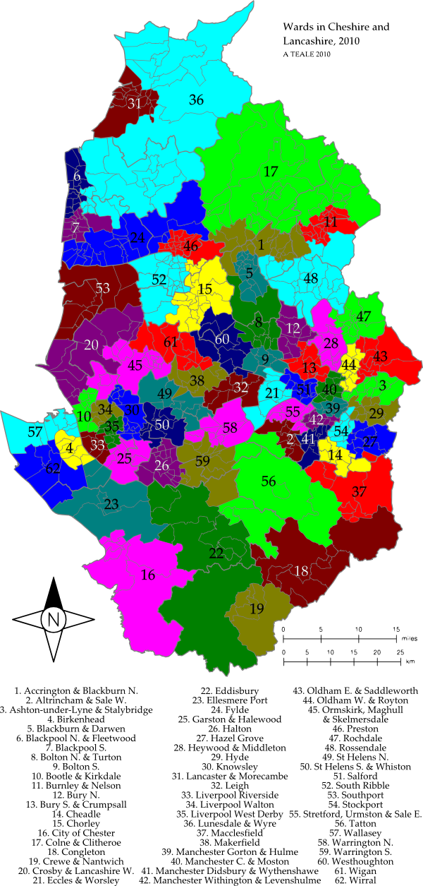

This document introduces my proposals for the forthcoming boundary changes for the counties of Cheshire, Greater Manchester, Lancashire and Merseyside.
In working these I used the following policies and assumptions:
Comments and corrections are welcome.
Andrew Teale
andrewteale at yahoo dot co dot uk
24th June 2010

(a) The following wards of Blackburn with Darwen: Beardwood; Little Harwood; Livesey; Roe Lee.
(b) The following wards of Burnley: Gawthorpe; Hapton
(c) The following wards of Hyndburn: Altham; Barnfield; Central; Church; Clayton-le-Moors; Huncoat; Milnshaw; Netherton; Overton; Peel; Rishton; Spring Hill.
(d) The following wards of Ribble Valley: Clayton-le-Dale; Mellor; Wilpshire.
A completely new seat drawn along the M65 motorway and the Blackburn northern ring road, running from Wilpshire to Padiham. Accrington is the main town in the seat; the four Blackburn wards included are the middle-class northern and western suburbs of the town. The main predecessor seat is Hyndburn.
The following wards of Trafford: Altrincham; Ashton upon Mersey; Broadheath; Brooklands; Bucklow-St Martins; Hale Barns; Hale Central; St Mary's; Timperley; Village
The two wards moved into the seat are Brooklands (from Wythenshawe) and Bucklow-St Martins (from Stretford). Sadly a seat containing Altrincham and the whole of Sale would be too big.
The following wards of Tameside: Ashton Hurst; Ashton St Michael's; Ashton Waterloo; Droylsden E; Droylsden W; Mossley; St Peter's; Stalybridge N; Stalybridge S
I've tried to redraw the Tameside constituencies to reflect the main communication links in the borough, which are to the north between Ashton and Stalybridge along the railway line and A635 road, and to the south between Denton and Hyde along the motorway. This is the northern seat, the successor to Ashton-under-Lyne, and includes the towns of Mossley and Droylsden.
(a) The following wards of Wirral: Bebington; Bidston; Birkenhead; Claughton; Oxton; Prenton; Rock Ferry
(b) The northern part of Bromborough ward, Wirral (c 5300 electors; Port Sunlight and Spital)
Bebington ward and Port Sunlight move in from Wirral South.
The wards of Blackburn with Darwen not included in Accrington and Blackburn North or Bolton North and Turton.
Rossendale and Darwen was always a bad constituency and this is my solution. This seat, the successor to Blackburn, contains most of Blackburn town and the whole of Darwen.
(a) The following wards of Blackpool: Anchorsholme; Bispham; Claremont; Greenlands; Ingthorpe; Norbreck; Warbreck
(b) The following wards of Wyre: Bourne; Carleton; Cleveleys Park; Jubilee; Mount; Park; Pharos; Rossall; Victoria; Warren
Roughly the same seat as in 1997–2010. Successor to Blackpool North and Cleveleys.
(a) The wards of Blackpool not included in Blackpool North and Fleetwood.
(b) The Staining and Weeton ward of Fylde.
Roughly the same seat as in 1997–2010.
(a) The following wards of Bolton: Astley Bridge; Bradshaw; Breightmet; Bromley Cross; Crompton; Halliwell; Smithills; Tonge
(b) The North Turton with Tockholes ward of Blackburn with Darwen.
The successor to Bolton North East, but expanded to take in Smithills ward in the north-west of Bolton town and also North Turton ward from Rossendale and Darwen, reuniting the whole of Turton in one constituency (the area was split rather arbitrarily between Bolton and Blackburn in 1974).
(a) The following wards of Bolton: Farnworth; Great Lever; Harper Green; Hulton; Kearsley; Little Lever; Rumworth
(b) The Little Hulton ward of Salford
The current Bolton South East plus Little Hulton from Worsley and Eccles South.
(a) The Everton and Kirkdale wards of Liverpool.
(b) The following wards of Sefton: Derby; Ford; Linacre; Litherland; Netherton; St Oswald
(c) The north-western part of Kensington and Fairfield ward, Liverpool (c 3200 electors).
The whole of Bootle and Litherland plus neighbouring wards from Liverpool. Only a local can tell you where Bootle ends and Liverpool begins in this area. Successor to Bootle.
(a) The wards of Burnley not included in the Accrington and Blackburn North or Rossendale seats.
(b) The following wards of Pendle: Bradley; Brierfield; Clover Hill; Marsden; Reedley; Southfield; Walverden; Whitefield
Just the two towns themselves without any of the surrounding rural areas in the current Burnley and Pendle constituencies. Successor to Burnley.
The areas of Bury not included in Bury South or Rossendale.
Much redrawn: takes Radcliffe from Bury South but loses southern Bury (Redvales ward) in return and also loses Shuttleworth from Ramsbottom ward to remain within tolerance.
(a) The following wards of Bury: Besses; Holyrood; Pilkington Park; Redvales; St Mary's; Sedgley; Unsworth
(b) The Crumpsall and Higher Blackley wards of Manchester.
(c) Part of Radcliffe West ward, Bury lying south of the River Irwell including the village of Outwood (c 2700 electors)
Radically redrawn, this becomes cross-borough by taking two wards from north Manchester. My justification for throwing Crumpsall in here is that I went to a secondary school in Prestwich (now the Arts College), which was then a bog-standard comprehensive but attracted a lot of pupils from the Crumpsall area further down the tramline, on the grounds that their parents did not want their kids to go to Abraham Moss school! This seat reunites Whitefield in one constituency.
(a) The Poynton ward of Cheshire East.
(b) The following wards of Stockport: Bramhall North; Bramhall South; Cheadle and Gatley; Cheadle Hulme North; Cheadle Hulme South; Heald Green
(c) Part of Stepping Hill ward, Stockport: the Norbury Moor area (c 2000 electors)
Loses part of Stepping Hill ward but crosses the GM boundary to include Poynton.
(a) The wards of Chorley not included in South Ribble or Westhoughton.
(b) The following wards of South Ribble: Bamber Bridge East; Bamber Bridge North; Bamber Bridge South; Coupe Green
A much redrawn seat, losing some rural fringes in the south-east (Adlington and Rivington) but gaining Bamber Bridge.
(a) The following wards of Cheshire West and Chester: Blacon; Boughton Heath; Broxton; City; Gowy; Hoole; Overleigh; Upton
(b) The part of Gowy ward, Cheshire West and Chester not included in Eddisbury.
Expands to the south as far as the Shropshire border.
(a) The wards of Pendle not included in Burnley and Nelson.
(b) The wards of Ribble Valley not included in Accrington and Blackburn North.
Rural East Lancashire and Bowland, plus Colne.
(a) The following wards of Cheshire East: Alsager; Congleton Rural; Congleton Town East; Congleton Town West; Middlewich; Sandbach; Sandbach East
(b) Part of Alderley ward, Cheshire East: Eaton parish (c 290 electors)
(c) Part of Macclesfield Forest ward, Cheshire East: the parished part of the ward (c 4500 electors)
Expands to the north-east as far as the outskirts of Macclesfield.
The following wards of Cheshire East: Crewe East; Crewe North; Crewe South; Crewe West; Doddington; Nantwich; Rope
Unchanged.
(a) The following wards of Sefton: Blundellsands; Church; Harington; Manor; Ravenmeols; Victoria
(b) The following wards of West Lancashire: Aughton and Downholland; Burscough East; Burscough West; Halsall; Rufford; Scarisbrick
Completely new seat containing Crosby, Formby, Burscough and the rural area between them. It's this or split Formby.
(a) The following wards of Salford: Barton; Boothstown; Cadishead; Eccles; Irlam; Walkden North; Walkden South; Winton; Worsley
(b) The western part of Swinton North ward, Salford (c 4300 electors)
The successor to Worsley and Eccles South, swapping Eccles town centre for Little Hulton. Good swap there.
(a) The Cholmondeley ward of Cheshire East.
(b) The following wards of Cheshire West and Chester: Abbey; Eddisbury; Frodsham; Weaver; Winsford N&E; Winsford S&W
(c) Part of Gowy ward, Cheshire West and Chester: the parishes of Ashton Hayes and Kelsall (c 2900 electors).
The good thing about having a seat named after a hill no-one has ever heard of is that you can hack the boundaries around pretty much at will :)
(a) The following wards of Cheshire West and Chester: Central; Grange; Groves; Ledsham; Mickle Trafford; Sutton
(b) The Eastham wards of Wirral.
(c) The part of Bromborough ward, Wirral not included in Birkenhead.
Based on the current Ellesmere Port and Neston, but loses Neston; instead the seat spreads northwards to Bromborough and southwards to Mickle Trafford.
(a) The wards of Fylde not included in Blackpool South or Lunesdale and Wyre.
(b) The following wards of Preston: Ingol; Lea; Preston Rural East; Preston Rural North
(c) The part of Greyfriars ward, Preston lying west of the railway line (c 1100 electors).
Expands to the east to take in all of the villages north of Preston, plus some north-western fringes of Preston town.
(a) The following wards of Knowsley: Halewood N; Halewood S; Halewood W
(b) The following wards of Liverpool: Allerton; Belle Vale; Cressington; Speke-Garston; Woolton
(c) The southern part of Church ward, Liverpool (c 5300 electors)
Takes half of Church ward out of Wavertree.
The wards of Halton not included in Warrington South.
Now includes more of the Runcorn suburbs which were in Weaver Vale.
(a) The following wards of Stockport: Bredbury; Bredbury Green; Hazel Grove; Manor; Marple N; Offerton
(b) The part of Marple South ward, Stockport not included in Macclesfield.
(c) The part of Steppling Hill ward, Stockport not included in Cheadle.
Expands to take Manor and Stepping Hill wards from Stockport and Cheadle respectively.
The following wards of Rochdale: Bamford; Castleton; E Middleton; Hopwood Hall; Norden; N Heywood; N Middleton; S Middleton; W Heywood; W Middleton
Unchanged.
(a) The following wards of Tameside: Audenshaw; Denton NE; Denton S; Dukinfield; Dukinfield Stalybridge; Hyde Godley; Hyde Newton; Hyde Werneth; Longdendale
(b) The part of Denton West ward, Tameside lying east of the railway line (c 2700 electors) (this might be an underestimate)
The southern seat in Tameside, consisting of Hyde, Dukinfield, Audenshaw and almost all of Denton.
The wards of Knowsley not included in Garston and Halewood or St Helens South and Whiston.
Unchanged.
The wards of Lancaster not included in Lunesdale and Wyre.
Currently Lancaster and Morecambe are the basis of two half-urban, half-rural seats. This seat combines the urban areas of both seats.
The following wards of Wigan: Astley Mosley Common; Atherleigh; Golborne; Leigh E; Leigh S; Leigh W; Lowton E; Tyldesley
Unchanged - just within tolerance.
(a) The following wards of Liverpool: Central; Greenbank; Mossley Hill; Picton; Princes Park; Riverside; St Michael's
(b) The northern half of Church ward, Liverpool (c 5300 electors).
Loses the area north of the city centre to Bootle.
(a) The following wards of Liverpool: Anfield; Clubmoor; County; Croxteth; Fazakerley; Norris Green; Warbreck
(b) The northern part of Tuebrook and Stoneycroft ward, Liverpool (c 3300 electors).
Gains Croxteth and Norris Green wards and Tuebrook from West Derby.
(a) The following wards of Liverpool: Childwall; Knotty Ash; Old Swan; Wavertree; West Derby; Yew Tree
(b) The part of Kensington and Fairfield ward, Liverpool not included in Bootle and Kirkdale.
(c) The part of Tuebrook and Stoneycroft ward, Liverpool not included in Liverpool Walton.
Takes in the north-eastern half of the Wavertree constituency.
(a) The following wards of Lancaster: Bolton-le-Sands; Carnforth; Ellel; Halton-with-Aughton; Kellet; Lower Lune Valley; Silverdale; Slyne-with-Hest; Upper Lune Valley; Warton
(b) The wards of Wyre not included in Blackpool North and Fleetwood
See 31: this is the corresponding rural seat.
(a) The following wards of Cheshire East: Bollington; Broken Cross; Macclesfield Town; Macclesfield West; Prestbury; Wilmslow North; Wilmslow South
(b) The part of Macclesfield Forest ward, Cheshire East not included in Congleton.
(c) The southern part of Marple South ward, Stockport (High Lane, c 3500 electors)
Takes Wilmslow out of Tatton.
(a) The following wards of Wigan: Abram; Ashton; Bryn; Hindley; Hindley Green; Orrell; Winstanley; Worsley Mesnes
(b) Part of Billinge and Seneley Green ward, St Helens: the parish of Seneley Green (c 3500 electors).
Takes Seneley Green parish out of St Helens. Most of the population of this parish lives in the village of Garswood which is continuous with Bryn in Greater Manchester and was once part of Ashton-in-Makerfield Urban District.
(a) The following wards of Manchester: Ardwick; Gorton N; Gorton S; Hulme; Longsight; Moss Side; Rusholme
(b) The part of Bradford ward not included in Manchester Central and Moston.
(c) The part of Moss Side ward not included in Manchester Withington and Levenshulme.
Basically a merger of the current Manchester Central with the eastern half of Manchester Gorton.
(a) The following wards of Manchester: Ancoats and Clayton; Charlestown; Cheetham; City Centre; Harpurhey; Miles Platting; Moston
(b) The western part of Bradford ward, Manchester (c 3400 electors)
The northern Manchester seat; similar to the 1997–2010 Manchester Blackley seat but minus Blackley and including the city centre.
(a) The following wards of Manchester: Baguley; Brooklands; Burnage; Didsbury E; Didsbury W; Northenden; Sharston; Woodhouse Park
(b) The southern half of Burnage ward, Manchester (c 5200 electors).
(c) The western end of Moss Side ward, Manchester (c 1600 electors).
The southern seat in Manchester; combines the Wythenshawe estate with the southern half of the old Manchester Withington.
(a) The following wards of Manchester: Chorlton; Chorlton Park; Fallowfield; Levenshulme; Old Moat; Whalley Range; Withington
(b) The northern half of Burnage ward, Manchester (c 5200 electors).
A merger of the northern half of the current Manchester Withington with the southern half of the old Gorton.
The parts of Oldham not included in Oldham West and Royton.
Gains almost all of Medlock Vale ward from Oldham West.
(a) The following wards of Oldham: Chadderton C; Chadderton N; Chadderton S; Coldhurst; Failsworth E; Failsworth W; Hollinwood; Royton N; Royton S; Werneth
(b) Part of Medlock Vale ward, Oldham: the area in the north-west corner around Hulme Grammar School (c 200 electors)
Gains Failsworth from Ashton-under-Lyne.
(a) The parts of West Lancashire not included in Crosby and West Lancashire, Southport or Wigan.
(b) The Molyneux, Park and Sudell wards of Sefton.
Another completely new seat basically consisting of the three towns named plus Bickerstaffe ward in the middle.
(a) The parts of Preston not included in Fylde.
(b) The Salmesbury ward of South Ribble.
Covers all the wards in Preston proper (except Ingol and part of Greyfriars wards, which go to Fylde) plus Salmesbury from Ribble Valley.
The wards of Rochdale not included in Heywood and Middleton.
Unchanged.
(a) The Borough of Rossendale.
(b) The Cliviger and Coal Clough wards of Burnley.
(c) The following wards of Hyndburn: Baxenden; Immanuel; St Andrew's; St Oswald's
(d) The part of Ramsbottom ward, Bury east of the M66 motorway (Shuttleworth, c 1500 electors)
Reunifies Rossendale in one parliamentary seat, and also includes the southern half of Hyndburn (Baxenden and Oswaldtwistle) and Burnley. East Lancs uplands, basically.
(a) The parts of St Helens not included in St Helens South and Whiston or Makerfield.
(b) Part of Burtonwood and Winwick ward, Warrington: the part of Burtonwood parish north of the M62 motorway.
Takes Burtonwood from Warrington North to compensate for losing Seneley Green to Makerfield.
(a) The Prescot E, Whiston N and Whiston S wards of Knowsley.
(b) The following wards of St Helens: Bold; Eccleston; Rainhill; Sutton; Thatto Heath; Town Centre; West Park
Unchanged.
The parts of Salford not included in Eccles and Worsley.
The Salford seat that the Boundary Commission should have drawn last time; Broughton and Kersal are brought back and Eccles moves out.
(a) The Eccleston and Lostock wards of Chorley.
(b) The wards of South Ribble not included in Chorley or Preston.
Takes Walton-le-Dale and the surrounding area from Ribble Valley.
(a) The following wards of Southport: Ainsdale; Birkdale; Cambridge; Duke's; Kew; Meols; Norwood
(b) The following wards of West Lancashire: Hesketh; North Meols; Tarleton
The first change to this seat for many years: gains the countryside to the east as far as the River Douglas.
(a) The following wards of Stockport: Brimington; Davenport; Edgeley; Heatons N; Heatons S; Reddish N; Reddish South
(b) The part of the Denton West ward of Tameside not included in Hyde.
Moves around the M60 to take in Reddish and part of Denton West as previously discussed.
The wards of Trafford not included in Altrincham and Sale West or Tatton.
Basically combines eastern Sale with the current Stretford and Urmston.
(a) The Bucklow and Knutsford wards of Cheshire East.
(b) The Northwich E and Northwich W wards of Cheshire West and Chester.
(c) The Bowdon ward of Trafford.
(d) The Lymm ward of Warrington.
(e) The part of Alderley ward, Cheshire East not included in Congleton.
(f) The part of Marbury ward, Cheshire West and Chester not included in Warrington South.
Greatly redrawn from the current seat, losing Wilmslow but gaining Northwich, Dunham Massey and Lymm.
The following wards of Wirral: Hoylake; Leasowe; Liscard; Moreton W; New Brighton; Seacombe; Wallasey
Takes Hoylake from Wirral West.
The parts of Warrington not included in St Helens North, Tatton or Warrington South.
Takes Whittle Hall ward from South.
(a) The Daresbury, Norton N and Norton S wards of Halton.
(b) The following wards of Warrington: Appleton; Bewsey; Grappenhall; Great Sankey N; Great Sankey S; Hatton; Latchford E; Latchford W; Penketh; Stockton Heath
(c) Part of Marbury ward, Cheshire West and Chester: the parishes of Antrobus, Comberbach, Great Budworth, Little Leigh and Whitley.
Expands south-west as far as the fringe of Runcorn and southwards into the Cheshire countryside to compensate for losing Lymm.
(a) The following wards of Bolton: Heaton; Horwich and Blackrod; Horwich NE; Westhoughton N; Westhoughton S
(b) The Adlington and Heath Charnock wards of Chorley.
(c) The Atherton ward of Wigan.
(d) The part of Aspull New Springs Whelley ward, Wigan not included in Wigan.
The successor to Bolton West, but with Smithills moving out of the seat there's now only one ward left from Bolton proper. To make up the numbers this seat takes in Adlington and Rivington from Chorley (both areas with strong links to Horwich) and also Aspull from Wigan, which was in the old Westhoughton seat until 1983.
(a) The following wards of Wigan: Douglas; Ince; Pemberton; Shevington; Standish; Wigan C; Wigan W
(b) The Newburgh, Parbold and Wrightington wards of West Lancashire.
(c) The New Springs area of Aspull New Springs Whelley ward, Wigan (c 2500 electors).
Expands west over the Greater Manchester boundary along the railway line as far as Parbold.
(a) The Neston ward of Cheshire West and Chester.
(b) The following wards of Wirral: Clatterbridge; Greasby; Heswall; Pensby; Upton; West Kirby
Basically a merger of the current Wirral South and Wirral West seats plus the town of Neston from Ellesmere Port and Neston.